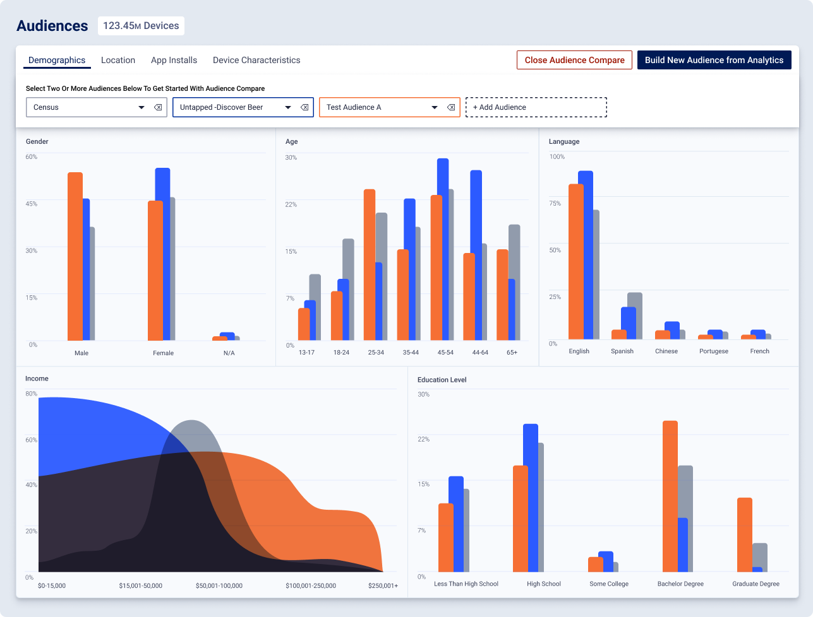
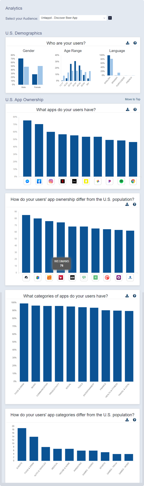
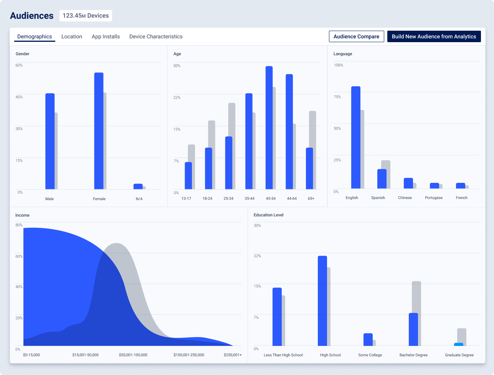
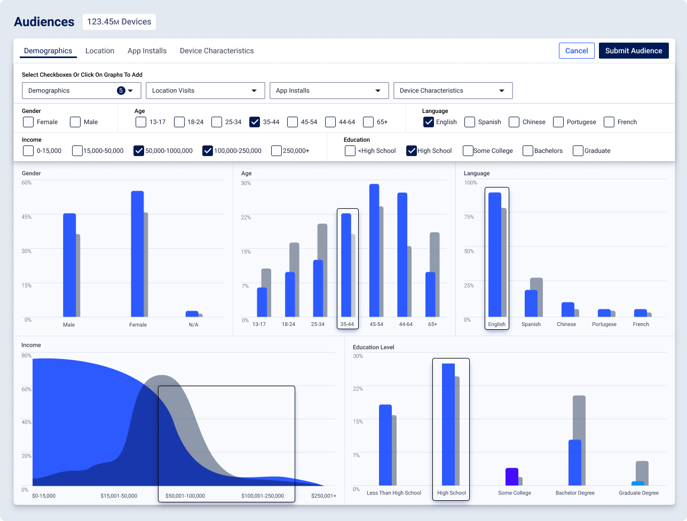

Audience targeting analytics for more than glancing

Final product: comparing two audience segments
We were a small shop. but we were hitting pain points as we grew. all our manual processes needed to scale. Our main product was helping customers choose the right audience for their ads. We had a lot of data, but interpretting it felt like reading tea leaves, and then our back office (me) had to go manually put the audience together for the customer.

Existing state: One long scroll of data, comparing data to find outliers is tedious.
As a startup we were all doing sales, and by the point my PM and I prioritized this product, we had talked to over 200 customers and had a ton of qualitative data about how we could improve our current offering.

Initial State
Design detail: hover tooltips showed previews of the widget content

Shipments, with ability to bookmark specific shipments, tab views, and for the first time, live tracking.
To be updated at 12:30pm CST